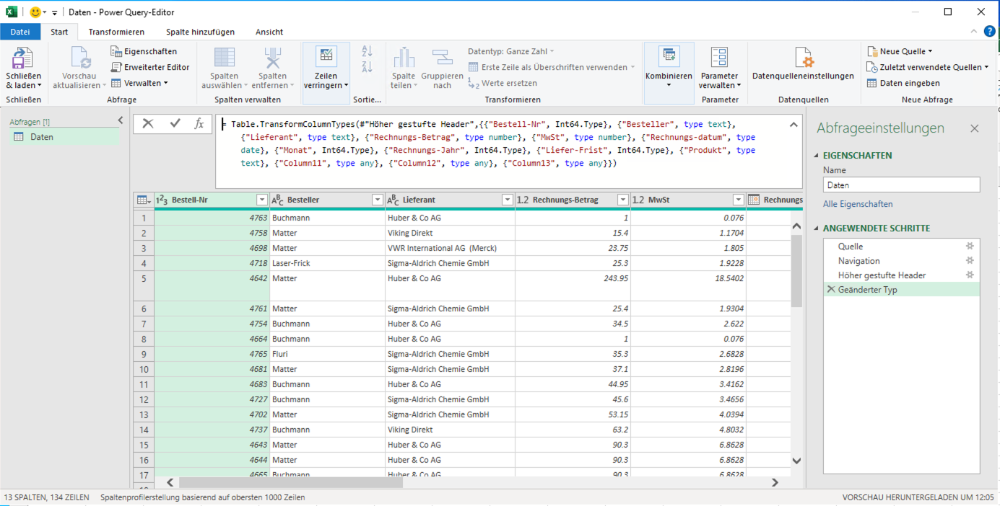
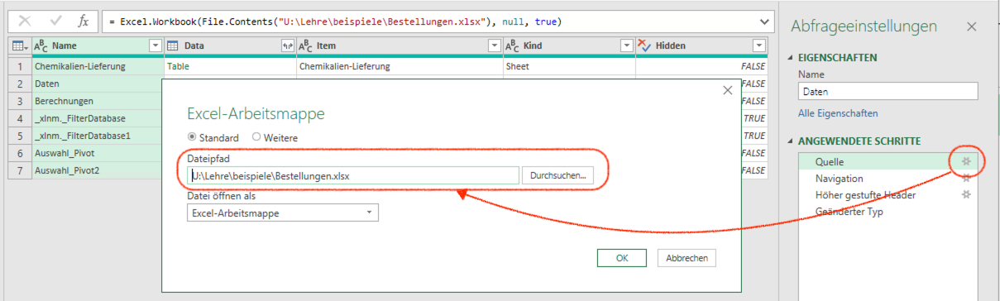

7 Daten importieren
Viele Excel Arbeitsmappen kombinieren Berechnungen und Daten. Excel kann allerdings auch Daten aus anderen Quellen importieren. Quellen können andere Dateien, Datenbanken oder Web-APIs sein und in verschiedenen Formaten vorliegen. Dafür stellt Excel Parser für verschiedene Dateiformate bereit, damit die Daten importiert werden können.
Daten werden korrekt mit dem Kommando Daten abrufen (Power Query) importiert. Das Kommando ist in der Gruppe Daten im Abschnitt Daten abrufen und transformieren zu finden. Das Kommando Daten abrufen startet die sog. Power Query Umgebung. In dieser Umgebung können Daten aus verschiedenen Quellen importiert und vor der Bereitstellung korrigiert werden.
Power Query ist eine Umgebung für den Datenimport, die von verschiedenen Microsoft Produkten verwendet wird. Die Umgebung ist in Excel, Power BI, Power Apps und Power Automate verfügbar. Power Query stellt eine einheitliche Schnittstelle für den Datenimport bereit und basiert auf einer Import-Beschreibungssprache. Mit diese Sprache lassen sich Daten für die Arbeit vorbereiten, so dass viele Datenbereinigungsschritte in Excel Arbeitsmappen entfallen können.

Zu den zentralen Funktionen von Power Query gehören:
- Quellenmanagement
- Überschriftenerkennung
- Schemaerkennung und -transformation
- Entfernen von Duplikaten und ungültigen Werten
- Vektorisierung von Daten
- Kombinieren von Daten aus verschiedenen Quellen
Viele tabellarische Dateiformate lassen sich direkt mit Excel öffnen. Das sollte nur mit Excel Arbeitsmappen erfolgen. Bei anderen Dateiformaten kann das direkte öffnen zu Datenverlusten oder Datenfehlern führen. Diese lassen sich in Excel nur umständlich korrigieren.
Ausserdem lassen sich direkt geöffnete Dateien nicht mehr erweitern, was die Datenerhebung erschwert.
Das Kernprinzip von Power Query ist das Verbinden einer Datenquelle mit einer Arbeitsmappen. Die Datenquelle wird dabei nicht in die Arbeitsmappe übernommen, sondern nur eine Verbindung zu der Datenquelle hergestellt. Dadurch kann eine Datenquelle in mehreren Arbeitsmappen verwendet werden und sich ändern, ohne dass die Arbeitsmappe angepasst werden muss.
Das Ergebnis eines Imports ist immer eine Tabelle.
7.1 Eine Datenverbindung herstellen
- Daten abrufen
- Datenquelle auswählen
- Daten überprüfen
- Daten gegebenenfalls transformieren
- Daten importieren
Nach einem Datenimport liegen die Daten in der Arbeitsmappe vor. Diese Daten sind eine Kopie der Daten in der Datenquelle. Die kopierten Werte sind als Tabelle in der Arbeitsmappe gespeichert. Dadurch kann die Arbeitsmappe unabhängig von der Datenquelle verwendet und geteilt werden.
Excel betrachtet jeden Datenimport als Sicherheitsproblem. Daher werden Datenverbindungen beim Öffnen einer Arbeitsmappe standardmässig deaktiviert. Beim Öffnen einer Arbeitsmappe mit einer Datenverbindung wird eine Warnung angezeigt. Um mit den importierten Daten arbeiten zu können, muss die Datenverbindung aktiviert werden.
Wird die Datenverbindung nicht aktiviert, werden Funktionen die auf die Daten zugreifen nicht ausgeführt, sondern nur die Ergebnisse der letzten Ausführung angezeigt.
7.2 Daten aktualisieren
Die Daten können sich aber ändern, z.B. weil ein Formular ausgefüllt wurde oder eine Datenbank aktualisiert wurde. Dadurch ändern sich die Daten in der Datenquelle. In solchen Fällen ist die Kopie in der Arbeitsmappe nicht mehr aktuell. Um die Daten zu aktualisieren, muss die Datenverbindung aktualisiert werden.
Dazu wird das Kommando Alle aktualisieren verwendet. Das Kommando ist im Menu Daten im Abschnitt Verbindungen zu finden. Das Kommando aktualisiert alle Datenverbindungen in der Arbeitsmappe entsprechend der Importspezifikation.
Es werden nur die importierten Daten aktualisiert. Wurde die Tabelle durch Formeln erweitert, werden diese Formeln nicht gelöscht, sondern auf die neuen Daten erweitert.
Die importierte Struktur darf nicht verändert werden. Das bedeutet, dass innerhalb der Struktur keine Spalten hinzugefügt oder gelöscht werden dürfen. Neue Spalten für Formeln müssen rechts von der importierten Datenstruktur der Tabelle hinzugefügt werden.
7.3 Datenverbindung anpassen
Gelegentlich ändert sich der Ort einer Datenquelle. Sehr häufig passiert das, wenn eine Datei in einen anderen Ordner verschoben wird. In solchen Fällen muss die Datenverbindung angepasst werden. Dazu muss in Power Query die Datenquelle angepasst werden.
VORGEHENSWEISE
- Powerquery öffnen
- Schritt “Quelle” ausählen
- Pfad zur Datenquelle anpassen
- Schema überprüfen
- Daten aktualisieren

Alle Datenverbindungen werden auch im Dialog Abfragen & Verbindungen (s. Abbildung 7.5) angezeigt. Der Dialog ist in der Gruppe Verbindungen im Abschnitt Daten zu finden. Der Dialog zeigt alle Datenverbindungen an, die in der Arbeitsmappe verwendet werden.
Grundsätzlich lassen sich die Datenquellen im Dialog Abfragen & Verbindungen anpassen. Die Windows Version von Excel öffent über diesen Weg den Power Query Editor. Die Version für MacOS macht das nicht. Um Änderungen an einer Abfrage vorzunehmen, muss die Abfrage in Power Query über das Kommando Daten abrufen geöffnet werden (s. Abbildung 7.6).